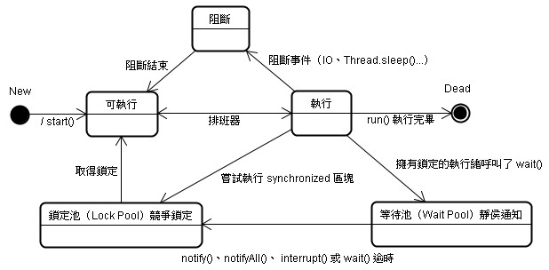

|
|
一個執行緒的生命週期，可以分作數個狀態，如下圖所示：  當你實例化一個Thread物件後，必須使用start()方法啟用它，start()方法只能執行一次，重複執行start()方法，會丟出IllegalThreadStateException。執行start()之後，執行緒並非馬上執行，而是進入可執行（Runnable）狀態，必須由排班器將執行緒排入CPU執行（Running）。 執行緒有其優先權，由1（Thread.MIN_PRIORITY）到10（Thread.MAX_PRIORITY），預設是 Thread.NORM_PRIORITY（5），您可以使用Thread的setPriority()方法來設定執行緒的優先權，設定必須在1到10之間，否則會丟出IllegalArgumentException。優先權高的執行緒會先被執行完畢，然後才會輪到優先權低的執行緒，如果優先權相同，則輸流執行（Round-robin方式）。 決大多數的作業系統都支援timeslicing，簡單的說就是作業 系統會為每個執行緒分配一小段CPU時間（quantum），時間一到就換下一個執行緒，即使現有的執行緒還沒結束。對於不支援timeslicing的 作業系統，每一個執行緒必須完成後，才能輪到下一個執行緒，在這樣的作業系統中，如果想要讓目前執行緒禮讓一下其它執行緒，讓它們有機會取得執行權， 可以在呼叫緒行緒的yield()方法，例如： Thread thread = new Thread(new Runnable() { public void run() { // .... while(true) { // .... Thread.yield(); // 暫時讓出執行權 } } }); thread.start(); yield()方法讓同樣優先權的執行緒有被執行的機會，當執行緒執行yield()方法讓出執行權時，它會再度加入執行緒的 排班，等待再度取得執行權，對於支援timeslicing的作業系統，呼叫yield()是不太需要的，因為作業系統會自動分配時間給執行緒輪流執行。 執行緒一旦執行完run()方法，就進入死亡（Dead）狀態，可以使用isAlive()方法來測試執行緒是否 存活，在死亡狀態的執行緒，嘗試再執行start()方法啟用它，會丟出IllegalThreadStateException。 如果執行緒因為等待IO（例如讀取檔案、網路連線等）或執行了Thread.sleep()，則會進入阻斷（Blocked）狀態，阻斷條件消失後，則回到可執行狀態，等待CPU排班器排入執行。 當執行緒嘗試進入synchronized區塊，必須先在物件的鎖定池（Lock Pool）競爭鎖定，只有取得鎖定的執行緒，才會進入可執行狀態，等待CPU排班器排入執行。 如果執行中（Running）的執行緒有取得物件鎖定，而此時呼叫了wait()，則會釋放物件鎖定進入等待池（Wait Pool），直到呼叫了notify()、notifyAll()、Interrupt()或wait()逾時，回到物件的鎖定池（Lock Pool）競爭鎖定，只有取得鎖定的執行緒，才會進入可執行狀態，等待CPU排班器排入執行。 在阻斷狀態或等待池中的執行緒，若呼叫了interrupt()，則會丟出InterruptedException例外物件。 |